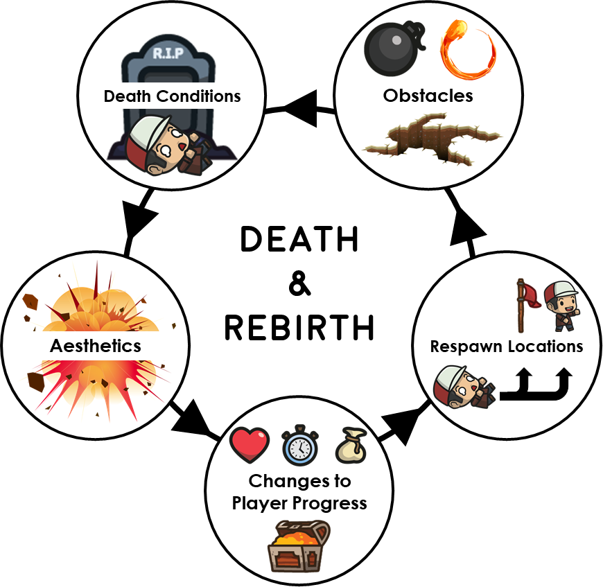

NOTE: Currently a work in progress!
Interpretive: Research
-
"Death & Rebirth: A Taxonomy for Platformer Games"
Advised by Edward Melcer.
Abstract. At the heart of failure in many game genres is player death. This chapter presents our exploration into the space of player death and rebirth through the creation of a generalized taxonomy of death in platformer games---one of the genres that features player death and respawning most heavily. In order to create this taxonomy, we collected and catalogued examples of respawning mechanics from 62 recent platformer games released on the digital distribution platform Steam after January 2018. Games selected varied equally across positive, mixed, and negative overall reviews in order to provide a broader range of mechanics, both good and bad. We observed gameplays of each individual game and noted the processes of death and rebirth respectively. A grounded theory approach was then employed to develop the taxonomy of game death and respawning, resulting in five notable dimensions: 1) death conditions, 2) respawn locations, 3) changes to player progress, 4) obstacles, and 5) aesthetics. Finally, we argue how the different dimensions and mechanics highlighted in our taxonomy have substantial implications for key aspects of player experience such as flow and enjoyment, and discuss how they could be used to improve the effectiveness of related techniques such as dynamic difficulty adjustment. -
"Evolving Child-Computer Interaction: Mobile-based Interaction Design and User Testing"

Read the current version of the paper.
Advised by Cynthia Putnam.
Abstract. While it is highly likely that children under the age of 12 have used a mobile device in the U.S., there is a paucity of information to guide interaction designers and usability experts about how to design and test their mobile apps with children. In this work (currently a pilot study), I have conducted user testing of mobile-based apps aimed at computational thinking with two different age groups (7-8 and 9-11). The pilot study will lay a foundation for an envisioned larger project that will result in developmental-focused interaction design guidelines for mobile apps; future work will include creating and testing the efficacy of a tool for designers to access the guideline libraries. This study also contributes to the knowledgebase of user testing with children; specifically, we are working to modify and adapt the System Usablity Scale (SUS) for these two groups.